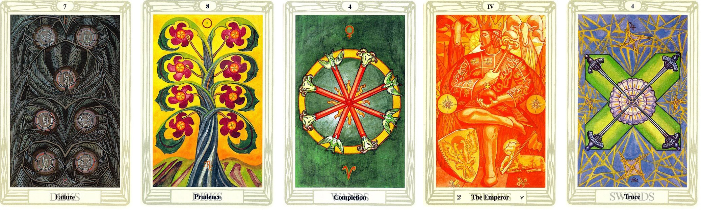
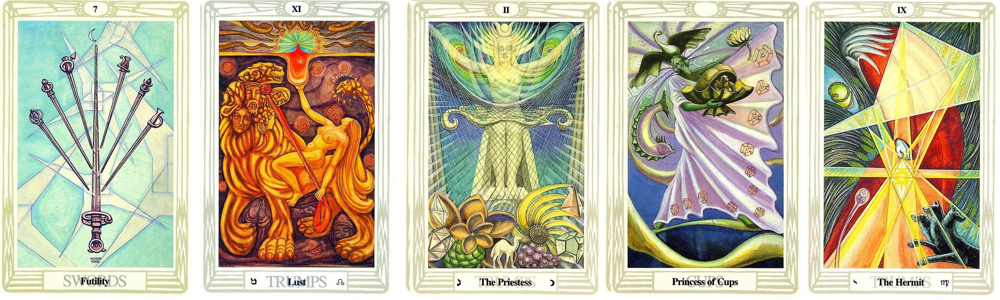
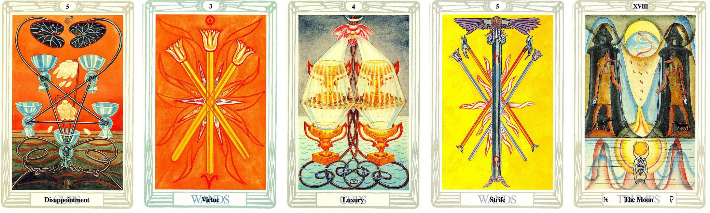

問題：詢問替自己的影片配音會如何

抽出來的牌面順序：
圓盤7 圓盤8 權杖4 皇帝 寶劍4
解牌分析
累積已久的能量要往外擴散 點子想法會很多
第一張牌
過去對配音這件事情 有放不開 不知道怎麼執行 整個卡住
第二張牌
較近的未來 想法上有開始改變 有感覺到其實可以換個方式執行
第三張牌
執行力是慢而穩 適合持續累積
第四張牌
會慢慢找出屬於自己的配音風格
最後一張牌
會有更多靈感及想法湧現
最終的答案
過往的經驗雖然不好 但只要持續累積 會找到屬於自己的風格
問題：詢問幫忙糾正文案文法及以協助者腳色幫忙配音會如何

抽出來的牌面順序：
寶劍7 慾望 女祭司 聖杯公主 隱士
解牌分析
會有不太習慣的狀況
第一張牌
會有很多想法產出 也有擔憂的部分
第二張牌
潛意識會想展現 表現自己 想將這件事情做好
第三張牌
真的執行後 又會覺得自己做的不夠好
第四張牌
會想擴大影響力 也會慢慢試出自己的風格
最後一張牌
會懷疑自己 不確定自己能否能夠勝任 但其實自己已經做得很好現
最終的答案
大牌比較多 代表著潛意識的想法變化多
會有一下子在自我懷疑 一下子又想展現自己
不要急躁 放寬心 會漸漸越來越好的
問題：詢問製作短影音會如何

抽出來的牌面順序：
聖杯5 權杖3 聖杯4 權杖5 月亮
解牌分析
有執行力 有熱誠 但製作的方向還沒有很確定 會有過多的擔憂
第一張牌
內心有擔憂 覺得自己沒辦法做出很棒的短影音
第二張牌
會嘗試去做出短影音後 反而有行動力去執行
第三張牌
內心還是會有很多不安及擔憂
第四張牌
會為了消除不安及擔憂而行動 做就對了
最後一張牌
潛意識內的不安較多 可能會藉由作惡夢的方式表達內心的不安
最終的答案
因為不確定自己是否能達成理想 所以會用行動的方式來達成理想
也會意識到自己內心其實有很多不安 可以將這股不安轉換成行動力 積極作為